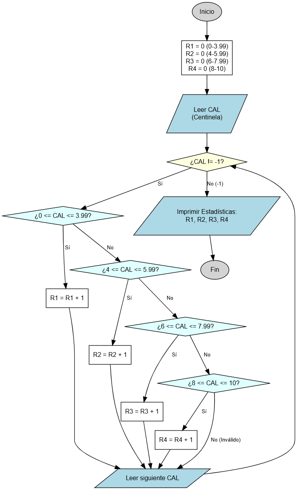

Frecuencia de Calificaciones
Clasificando datos en grupos.
En este problema aprenderás a realizar una "distribución de frecuencias". A menudo no nos interesa el promedio, sino saber cuántas personas están en cierto nivel (reprobados, regulares, excelentes). Utilizarás un ciclo con valor centinela (-1) y múltiples contadores condicionales.

Objetivo
Crear un programa que lea una serie de calificaciones de un examen de computación. El programa debe terminar cuando el usuario ingrese -1. Al final, debe imprimir cuántas calificaciones cayeron en cada uno de los siguientes rangos:
- Rango 1: 0 a 3.99 (Reprobado bajo)
- Rango 2: 4 a 5.99 (Reprobado alto)
- Rango 3: 6 a 7.99 (Aprobado regular)
- Rango 4: 8 a 10 (Excelente)
Variables a Declarar
- CAL: tipo real (
double) - La calificación que se ingresa en cada vuelta. - R1, R2, R3, R4: tipo entero (
int) - Cuatro contadores distintos, uno para cada rango. Deben iniciar en 0.
Operaciones a Realizar
- Inicializar los 4 contadores en cero.
- Leer la primera calificación
CAL. - Iniciar un ciclo mientras
CAL != -1:- Validar en qué rango cae la calificación usando
if / else if. - Incrementar el contador correspondiente (ej.
R1++). - Leer la siguiente calificación
CAL(¡Muy importante para no crear un ciclo infinito!).
- Validar en qué rango cae la calificación usando
- Al recibir el -1, el ciclo termina. Imprimir los totales de los 4 contadores.
Resultado Esperado
Ingrese calificacion (-1 para terminar): 5.5 Ingrese calificacion (-1 para terminar): 9 Ingrese calificacion (-1 para terminar): 3.2 Ingrese calificacion (-1 para terminar): 8.5 Ingrese calificacion (-1 para terminar): 10 Ingrese calificacion (-1 para terminar): 7 Ingrese calificacion (-1 para terminar): -1 --- ESTADISTICAS --- Rango 0 - 3.99 : 1 Rango 4 - 5.99 : 1 Rango 6 - 7.99 : 1 Rango 8 - 10 : 3